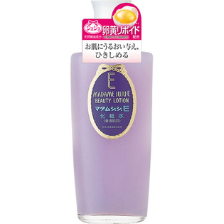

返回列表
产品名称：マダムジュジュE 化粧水

ジュジュ化粧品 マダムジュジュE 化粧水 １５０ｍｌ
メーカー ジュジュ化粧品
JANコード 4901727006015
商品の特徴
＜普通肌用＞
- 成分・分量
- ＜全成分＞
水、変性アルコール、PG、グリセリン、香料、ステアリン酸PEG-2、コレステロール、ポリオキシエチレンセチルエーテルリン酸Na、ミリスチン酸イソプロピル、アラントイン、メチルパラベン、酢酸トコフェロール、イソプロパノール、卵黄エキス、紫401
- 用法及び用量
- 洗顔のあと、適量を手のひらまたはコットンにとり、お肌になじませて下さい。